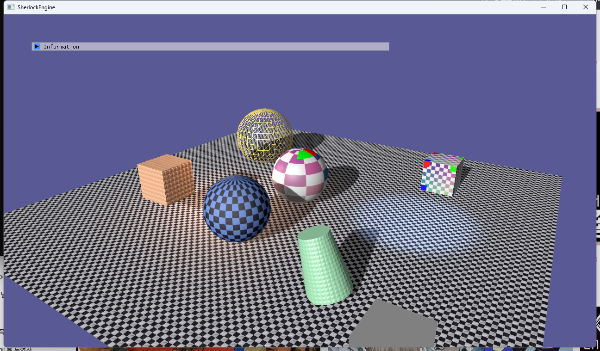
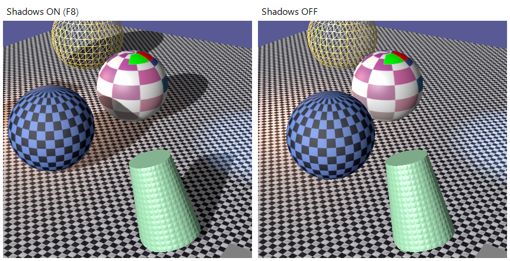
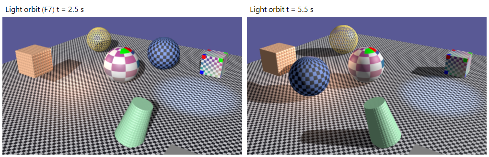
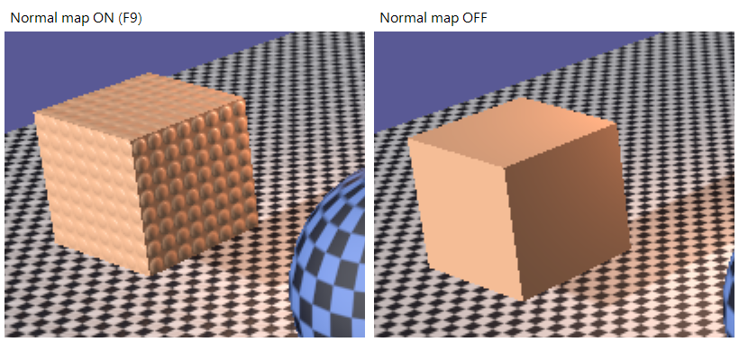
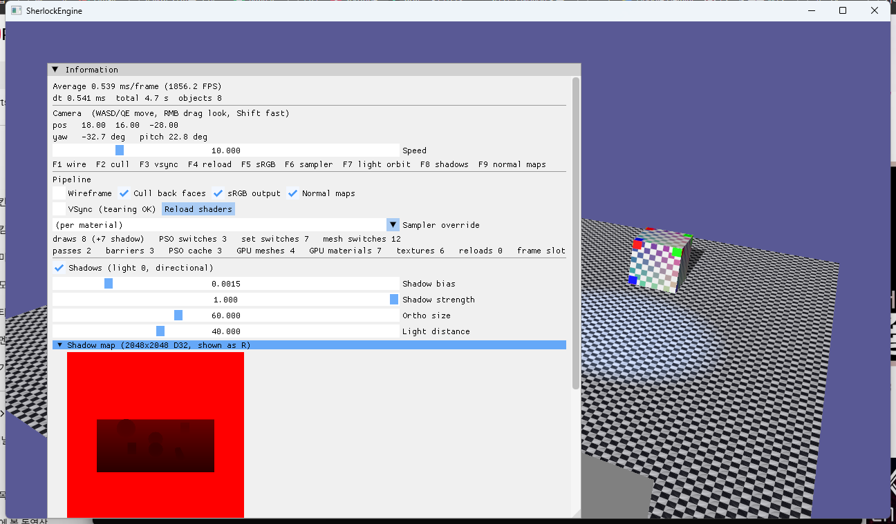

6단계 · 그림자 · RenderPass · CommandList
RHI의 마지막 두 조각을 만든 단계입니다. RenderPass는 "어느 타깃에, 어떤 클리어로 시작하고, 끝날 때 무엇을 남기는가"를, CommandList는 "GPU 명령을 어디에 기록하는가"를 추상화합니다. Device에 있던 즉시 바인딩·드로우 함수는 전부 CommandList로 옮겨 갔고, Renderer의 GPU 호출은 예외 없이 CommandList를 거칩니다. 첫 실전 사용처는 방향광 그림자 맵(2048², D32, PCF 3×3)입니다. 이것은 첫 렌더-투-텍스처이자 "DSV로 쓰고 → SRV로 읽는" 상태 전이가 있는 첫 리소스이기도 해서, Barrier 호출이 코드에 들어왔습니다. 정점에 탄젠트가 붙어 노멀 매핑이 되고, 조명 8개를 전부 ImGui에서 편집합니다.
프레임은 BeginFrame → [ShadowPass → MainPass → UIPass] → EndFrame(Present)로 고정됐습니다. 패스마다 RenderPassDesc(타깃 + Load/Store + 뷰포트)를 CommandList::BeginRenderPass에 넘기고, D3D11은 그것을 OMSetRenderTargets + Clear + RSSetViewports로 풉니다. 그림자 맵에는 패스 앞뒤로 Barrier(DepthWrite ↔ ShaderResource)가 붙습니다. D3D11에서는 상태 추적만 하고, D3D12에서는 그 자리에 실제 ResourceBarrier가 들어갑니다. 같은 텍스처가 SRV에 남아 있으면 D3D11이 경고와 함께 강제로 풀어 버리므로, CommandList가 SRV 슬롯을 추적해 타깃으로 잡기 전에 먼저 풉니다 — 이 세션의 Debug Layer 경고는 0건입니다.
1.요약
| 항목 | 5단계까지 | 6단계 |
|---|---|---|
| 타깃 바인딩·클리어 | Device::BeginFrame이 백버퍼+깊이를 걸고 클리어, BeginUIPass가 UNORM 뷰로 교체 | RenderPassDesc → CommandList::BeginRenderPass/EndRenderPass. Device는 프레임 인덱스와 Present만 |
| 바인딩·드로우 | Device::BindPipeline / SetResourceSet / BindVertexBuffer / BindIndexBuffer / DrawIndexed | 전부 CommandList로. Device에서 삭제. Renderer는 GetCommandList()로 받는다 |
| 상태 전이 | 없음 (D3D11이 알아서) | Barrier(texture, before, after). D3D11: 텍스처의 state 추적 + Debug 검증. 프레임당 4회 |
| 렌더 타깃 텍스처 | 백버퍼·깊이만 | 그림자 맵 2048² D32_FLOAT, DepthStencil | ShaderResource → TYPELESS 리소스 + 포맷별 뷰 |
| PSO | VS+PS 필수 | PS 없는 깊이 전용 PSO 허용 (rtvCount 0, dsvFormat D32, 깊이 바이어스) |
| 정점 | 48B (P C N T) | 64B, float4 tangent (xyz = u 방향, w = 손잡이). 모든 프리미티브에 해석적 탄젠트 |
| b0 PerFrame | 208B | 288B: lightViewProj, shadowParams(텍셀 크기·바이어스·세기·사용) |
| 재질 셋 | b3 · t0 · s0 | b3 · t0 알베도 · t1 노멀 · s0. 프레임 셋에 t8 그림자 맵 · s4 비교 샘플러 |
| 조명 UI | 0번만 편집 | 8개 전부: 추가/삭제, 타입, 위치, 방향, 색, 세기, 범위, 원뿔, 감쇠. 씬에 점광·스포트 추가 |
| 단축키 | F1–F6 | + F7 광원 공전, F8 그림자, F9 노멀 맵 |
2.RenderPass: 타깃과 Load/Store
2.1 왜 "패스"라는 단위가 필요한가
D3D11에서 렌더 타깃은 그냥 상태입니다. OMSetRenderTargets를 부르면 그때부터 그곳에 그려지고, 클리어는 별개의 명령이며, 이전 내용을 유지하려면 클리어를 부르지 않으면 그만입니다. 이 자유로움이 문제가 되는 곳은 두 군데입니다. 하나는 타일 기반 GPU(모바일, 그리고 최근 데스크톱의 일부)로, 타일 메모리에 올릴 때 이전 내용을 읽어 와야 하는지(Load), 끝난 뒤 메인 메모리에 써야 하는지(Store)를 미리 알면 대역폭을 크게 아낍니다. 다른 하나는 D3D12/Vulkan/Metal 같은 명시적 API로, 타깃이 "언제 쓰이기 시작해 언제 끝나는지"를 드라이버가 아니라 애플리케이션이 선언합니다.
Vulkan은 이것을 VkAttachmentLoadOp(LOAD / CLEAR / DONT_CARE)와 VkAttachmentStoreOp로 정의했고11, D3D12는 Windows 10 1809에서 ID3D12GraphicsCommandList4::BeginRenderPass를 추가해 같은 개념을 D3D12_RENDER_PASS_BEGINNING_ACCESS_TYPE(DISCARD / PRESERVE / CLEAR / NO_ACCESS)과 ENDING_ACCESS_TYPE(DISCARD / PRESERVE / RESOLVE / NO_ACCESS)으로 표현합니다1,12. D3D12 문서는 렌더 패스 안에서 "쓴 것을 같은 패스에서 읽을 수 없다"는 제약과 함께, 현재 바인딩된 타깃에 대한 배리어를 패스 안에 넣으면 안 된다고 명시합니다1. 우리 RenderPassDesc는 이 둘의 교집합입니다.
// Graphics/RenderPassTypes.h
enum class LoadOp : uint8_t { Load, Clear, DontCare };
enum class StoreOp : uint8_t { Store, DontCare };
struct ColorAttachment { TextureHandle texture; LoadOp load; StoreOp store; bool srgbView; float clearColor[4]; };
struct DepthAttachment { TextureHandle texture; LoadOp load; StoreOp store; float clearDepth; uint8_t clearStencil; };
struct Viewport { float x, y, width, height, minDepth, maxDepth; }; // width 0 = attachment 크기
struct RenderPassDesc
{
ColorAttachment colors[kMaxRenderTargets];
uint8_t colorCount;
DepthAttachment depth; // texture 가 비면 깊이 없음 (UI 패스)
Viewport viewport;
const char* debugName;
};2.2 D3D11 구현과 SRV 충돌
CommandList::BeginRenderPass는 다섯 단계로 이뤄집니다. (1) attachment 텍스처가 SRV 슬롯에 남아 있으면 먼저 푼다, (2) RTV/DSV를 모으고 뷰포트 기본 크기를 첫 attachment에서 얻는다, (3) OMSetRenderTargets, (4) LoadOp::Clear인 것만 Clear*View, (5) RSSetViewports. EndRenderPass는 OMSetRenderTargets(0, nullptr, nullptr)로 타깃을 풉니다 — 문서가 명시하듯 이 호출은 바인딩된 모든 타깃을 해제합니다6. Store op는 D3D11에서 할 일이 없습니다.
(1)이 이 단계의 핵심 함정입니다. 같은 리소스가 SRV(읽기)와 RTV/DSV(쓰기)에 동시에 바인딩되면 D3D11은 읽기 쪽을 강제로 NULL로 만들고 경고를 냅니다6. 그림자 맵이 정확히 이 경우입니다: 메인 패스에서 t8로 읽고, 다음 프레임 그림자 패스에서 DSV로 씁니다. 원문 로드맵도 이 점을 지적했습니다. 해결책은 CommandList가 SetResourceSet에서 슬롯마다 어떤 텍스처 핸들을 넣었는지 기억하고(m_psSrv[16], m_vsSrv[16]), BeginRenderPass가 attachment와 같은 핸들이 있는 슬롯을 NULL로 바꾸는 것입니다. 우리가 먼저 풀면 경고가 나지 않고, 추적도 정확해집니다.
// Graphics/D3D11/CommandList.cpp
void CommandList::UnbindShaderResourcesOf(TextureHandle texture)
{
ID3D11ShaderResourceView* nullSrv = nullptr;
for (uint32_t slot = 0; slot < kMaxSrvRegister; ++slot)
{
if (m_psSrv[slot] == texture) { context->PSSetShaderResources(slot, 1, &nullSrv); m_psSrv[slot] = TextureHandle{}; ++m_stats.srvUnbinds; }
if (m_vsSrv[slot] == texture) { context->VSSetShaderResources(slot, 1, &nullSrv); m_vsSrv[slot] = TextureHandle{}; ++m_stats.srvUnbinds; }
}
}그래서 바인딩 순서가 중요합니다. 프레임 셋(b0·b2·t8·s4)을 그림자 패스 전에 바인딩하면 BeginRenderPass가 t8을 풉니다. 그림자 패스는 b0·b1만 쓰므로 문제없이 그려지고, 메인 패스가 시작할 때 프레임 셋을 다시 바인딩해 t8을 되살립니다. 순서를 바꿔 그림자 패스 안에서 프레임 셋을 바인딩하면 t8 SRV와 DSV가 충돌합니다.
2.3 프레임 구조
// App/AppBase.cpp — Run()
graphicsDevice.BeginFrame(); // 프레임 인덱스만
Render(); // Renderer: ShadowPass → MainPass
renderer.BeginUIPass(); // 백버퍼 UNORM 뷰, Load, 깊이 없음
ImGuiBackend::Render();
renderer.EndUIPass(); // EndRenderPass + Barrier(RenderTarget → Present)
graphicsDevice.EndFrame(); // Present
// Graphics/Renderer.cpp — 메인 패스
cmd.Barrier(backBuffer, ResourceState::Present, ResourceState::RenderTarget);
RenderPassDesc pass;
pass.colorCount = 1;
pass.colors[0].texture = backBuffer;
pass.colors[0].load = LoadOp::Clear;
pass.colors[0].srgbView = m_settings.srgbOutput; // 5단계의 sRGB 뷰가 여기로
pass.depth.texture = m_device->GetDepthBuffer();
pass.depth.load = LoadOp::Clear;
pass.debugName = "MainPass";
cmd.BeginRenderPass(pass);
cmd.SetResourceSet(m_frameSet); // t8 되살림
cmd.SetResourceSet(m_objectSet);
// … 정렬된 드로우 …
cmd.EndRenderPass();이것으로 rendering-analysis의 D4("프레임 시작/끝의 소유권")가 마무리됩니다. 클리어 색·sRGB 여부·타깃은 전부 Renderer가 만드는 RenderPassDesc에 있고, AppBase는 순서만 압니다. Device의 SetClearColor·SetSrgbOutput·BeginUIPass는 삭제됐습니다.
3.CommandList와 Barrier
CommandList는 D3D11에서 ImmediateContext의 얇은 래퍼라 "기록"이 곧 실행입니다. D3D12에서는 ID3D12GraphicsCommandList에 쌓였다가 ExecuteCommandLists로 제출되지만, 호출 코드는 같은 메서드를 같은 순서로 부릅니다. 7단계에서 이 공개 API가 그대로 RHI::CommandList 가상 인터페이스가 됩니다.
| CommandList | D3D11 (지금) | D3D12 (8단계) |
|---|---|---|
BeginRenderPass(desc) | SRV 언바인드 + OMSetRenderTargets + Clear + RSSetViewports | OMSetRenderTargets + Clear (또는 BeginRenderPass) |
EndRenderPass() | OMSetRenderTargets(0) | EndRenderPass / 없음 |
SetPipelineState(h) | PipelineState::Bind — 7개 호출 | SetPipelineState + IASetPrimitiveTopology |
SetResourceSet(h) | 슬롯마다 *SSetConstantBuffers / ShaderResources / Samplers | SetGraphicsRootDescriptorTable |
SetVertexBuffer / SetIndexBuffer | IASetVertexBuffers / IASetIndexBuffer | IASetVertexBuffers / IASetIndexBuffer (뷰 구조체) |
DrawIndexed | DrawIndexed (패스 밖이면 에러 로그 후 무시) | DrawIndexedInstanced |
Barrier(tex, before, after) | no-op + 상태 추적. Debug: before ≠ 추적 상태면 경고 | ResourceBarrier(Transition) |
CopyBuffer(dst, src) | CopyResource | CopyResource + 상태 전이 |
Barrier를 지금 넣는 이유는 원문 로드맵의 말 그대로입니다: D3D12로 갈 때 "어디에 배리어가 필요한지"가 이미 코드에 적혀 있게 됩니다. D3D12는 리소스별 상태 관리를 드라이버에서 애플리케이션으로 옮겼고, 연속된 배리어의 before/after가 맞지 않으면 Debug Layer가 잡습니다2. 그래서 D3D11 백엔드도 D3D11Texture::state를 두고 호출 코드가 적은 before와 비교해 Debug에서 경고합니다 — D3D12에서 에러가 될 자리를 미리 잡는 것입니다. 상태 열거는 D3D12_RESOURCE_STATES의 부분집합(Common, RenderTarget, DepthWrite, ShaderResource, CopySource, CopyDest, Present)입니다13. 스왑체인 버퍼는 D3D12 관례대로 Present로 시작하고, 프레임마다 Present → RenderTarget → Present를 오갑니다. 이 세션의 배리어 4회는 그림자 맵 2회, 백버퍼 2회입니다.
4.그림자 매핑
4.1 두 패스 알고리즘
Williams가 1978년에 제안한 방법10은 두 패스로 이뤄집니다. 첫 패스는 광원 시점에서 씬을 그려 깊이만 남깁니다(그림자 맵). 둘째 패스는 각 픽셀의 월드 위치를 같은 광원 행렬로 변환해, 그 위치의 깊이가 그림자 맵에 기록된 깊이보다 멀면 "광원과 그 픽셀 사이에 무언가 있다" = 그림자로 판정합니다3. 정점 셰이더가 위치를 두 번 변환하는 것이 특징입니다.
// BasicVertexShader.hlsl
vsOutput.position = mul(worldPosition, viewProj); // 카메라
vsOutput.shadowPosition = mul(worldPosition, lightViewProj); // 광원 (PS 가 UV 로 바꾼다)
// ShadowVertexShader.hlsl — 그림자 패스. 픽셀 셰이더 없음.
float4 VS_Shadow(ShadowVSInput input) : SV_POSITION
{
const float4 worldPosition = mul(float4(input.position, 1.0f), world);
return mul(worldPosition, lightViewProj);
}그림자 VS는 POSITION만 읽지만 입력 레이아웃은 메인 패스의 64B VERTEX를 그대로 씁니다. CreateInputLayout은 VS 시그니처를 레이아웃과 대조하는데, 레이아웃에 셰이더가 읽지 않는 원소가 더 있는 것은 허용됩니다16. 그래서 PSO가 하나 더 늘 뿐(캐시 3개) 정점 버퍼는 공유합니다.
4.2 깊이 텍스처를 읽기: TYPELESS
깊이 버퍼를 셰이더에서 읽으려면 같은 비트를 두 방식으로 해석해야 합니다: DSV는 D32_FLOAT로, SRV는 R32_FLOAT로. D3D에서는 리소스를 R32_TYPELESS로 만들고 뷰마다 완전한 포맷을 지정하는 방식으로 이를 허용합니다14. D3D12도 정확히 같은 규칙입니다. Device::CreateTexture는 DepthStencil | ShaderResource 조합을 보면 리소스를 TYPELESS로 만들고 D3D11Texture::typeless를 true로 설정하며, GetDSV/GetSRV가 명시적 뷰 포맷을 씁니다. 호출 코드(Renderer)는 Format::D32_FLOAT와 bind 플래그만 적습니다.
// Graphics/D3D11/D3D11Resources.h
namespace D3D11DepthFormat
{
Typeless(D32_FLOAT) = R32_TYPELESS; Typeless(D24_UNORM_S8_UINT) = R24G8_TYPELESS;
ShaderView(D32_FLOAT) = R32_FLOAT; ShaderView(D24_UNORM_S8_UINT) = R24_UNORM_X8_TYPELESS;
}
// GetSRV: typeless 면 D3D11_SHADER_RESOURCE_VIEW_DESC{ Format = ShaderView(…), TEXTURE2D, MipLevels } 로 명시4.3 깊이 전용 PSO와 바이어스
그림자 패스는 색을 쓰지 않으므로 픽셀 셰이더가 없습니다. PSSetShader(nullptr)는 그 스테이지를 끄는 정식 방법이고15, D3D12 PSO는 PS 바이트코드를 비워 두면 됩니다. PipelineState::Create가 빈 ps 핸들을 허용하게 바꿨고, Desc는 rtvCount = 0, dsvFormat = D32_FLOAT입니다.
가장 흔한 그림자 아티팩트 두 가지는 shadow acne(표면이 자기 자신에게 그림자를 드리워 생기는 모아레)와 Peter Panning(바이어스가 커서 그림자가 물체에서 떨어지는 것)입니다3. acne는 그림자 맵 텍셀 하나가 깊이 하나로 양자화되는데 수신 픽셀은 그 위를 연속으로 지나가기 때문에 생깁니다. 대응은 두 겹입니다. 래스터라이저의 DepthBias·SlopeScaledDepthBias가 그림자 맵을 쓸 때 표면을 광원에서 조금 밀어내고, 셰이더가 비교 시 수신자 깊이에서 작은 값을 뺍니다. 부동소수점 깊이 버퍼에서 DepthBias 한 단위는 2^(지수 − 23)이라 z ≈ 0.5에서 약 6e-8입니다5. 그래서 2000 같은 큰 정수가 정상이고, 기울기 비례 항이 비스듬한 면을 맡으며, DepthBiasClamp가 극단적 각도에서 폭주를 막습니다.
// Renderer.cpp — 그림자 PSO 의 고정 부분
m_shadowDesc.ps = ShaderHandle{}; // 깊이 전용
m_shadowDesc.rtvCount = 0;
m_shadowDesc.dsvFormat = Format::D32_FLOAT;
m_shadowDesc.rasterizer.depthBias = 2000; // × 2^(e−23)
m_shadowDesc.rasterizer.slopeScaledDepthBias = 2.0f;
m_shadowDesc.rasterizer.depthBiasClamp = 0.01f;
// 셰이더 쪽: shadowParams.y = 0.0015 (ImGui 슬라이더)4.4 비교 샘플러와 PCF
비교는 셰이더에서 if (depth > stored)로 할 수도 있지만, 하드웨어에는 그것을 대신하고 이웃 텍셀과 보간까지 해 주는 비교 샘플러가 있습니다. D3D11_FILTER_COMPARISON_*에 ComparisonFunc를 주면 SampleCmp가 텍셀마다 비교 결과(0/1)를 만들고 그것을 선형 보간해 돌려줍니다4. 이것이 2×2 하드웨어 PCF입니다. 우리는 그 위에 3×3 오프셋을 더해 9번 샘플하고 평균 냅니다 — Percentage-Closer Filtering의 가장 단순한 형태입니다9. SampleCmpLevelZero는 밉 0만 보는 버전이고, 정수 오프셋 인자로 이웃 텍셀을 지정합니다4.
// BasicPixelShader.hlsl
const float3 p = shadowPosition.xyz / shadowPosition.w;
const float2 uv = float2(p.x * 0.5f + 0.5f, -p.y * 0.5f + 0.5f); // NDC → 텍스처 (v 는 아래로)
const float depth = p.z - shadowParams.y;
float lit = 0.0f;
[unroll] for (int dy = -1; dy <= 1; ++dy)
[unroll] for (int dx = -1; dx <= 1; ++dx)
lit += shadowMap.SampleCmpLevelZero(shadowSampler, uv, depth, int2(dx, dy));
lit /= 9.0f;
return lerp(1.0f, lit, shadowParams.z);샘플러 주소 모드는 Border, 테두리 색 1입니다. 광원 직교 상자 밖으로 나간 픽셀은 "빛을 받음"으로 처리해 맵 가장자리에 그림자 띠가 생기지 않게 합니다. 5단계에서 미뤄 둔 로드맵의 ShadowCompare 샘플러가 바로 이것입니다.
4.5 광원 행렬
방향광에는 위치가 없으므로 씬 중심에서 빛의 반대 방향으로 물러난 곳에 눈을 두고(LookAtLH), 직교 투영(OrthographicLH)으로 60×60 영역을 봅니다. 빛이 거의 수직이면 up = +Y가 시선과 평행해져 LookAt이 무너지므로 그때는 +Z를 up으로 씁니다. Microsoft의 그림자 기법 문서가 권하는 다음 단계 — 카메라 절두체에 맞춘 타이트한 투영, 텍셀 단위로 반올림한 원점(가장자리 떨림 방지), 캐스케이드 — 는 넣지 않았습니다3. 씬이 40×40 바닥 하나라 고정 상자로 충분하고, ImGui 슬라이더로 크기와 거리를 바꿀 수 있습니다.
5.노멀 매핑과 탄젠트
노멀 맵은 표면의 미세한 기울기를 텍스처에 저장한 것입니다. 값은 표면 로컬의 탄젠트 공간(T = u가 증가하는 방향, B = v가 증가하는 방향, N = 표면 노멀)에 있고, (0.5, 0.5, 1)이 "평평"입니다. 조명은 월드 공간에서 계산하므로 픽셀마다 TBN 행렬로 월드 공간에 옮깁니다8. 그러려면 정점에 T가 있어야 하고, B는 cross(N, T)로 만들되 UV가 뒤집힌 면에서는 방향이 반대라 손잡이(±1)를 정점에 함께 저장합니다 — Lengyel이 정리한 방식입니다7.
// Graphics/Mesh.cpp — 프리미티브는 T, B 를 해석적으로 안다
t = normalize(T − N·dot(N, T)); // Gram-Schmidt
w = dot(cross(N, t), B) < 0 ? −1 : +1; // 손잡이
vertex.tangent = (t.x, t.y, t.z, w);
// BasicPixelShader.hlsl
const float3 T = SafeNormalize(input.tangent.xyz - N * dot(N, input.tangent.xyz), …);
const float3 B = cross(N, T) * input.tangent.w;
float3 tn = normalTexture.Sample(albedoSampler, input.uv).xyz * 2.0f - 1.0f;
tn.xy *= normalStrength;
const float3 normal = SafeNormalize(tn.x * T + tn.y * B + tn.z * N, N);| 프리미티브 | T (u+) | B (v+) |
|---|---|---|
| 구 | ∂P/∂θ = (−sin θ, 0, cos θ) | ∂P/∂φ = (cos φ cos θ, −sin φ, cos φ sin θ) |
| 큐브 | 면마다 u+의 월드 방향 (예: 앞면 +X) | 면마다 v+의 월드 방향 (예: 앞면 −Y) |
| 평면 | +X | −Z |
| 실린더 옆면 | (−sin θ, 0, cos θ) | (Δr cos θ, −h, Δr sin θ) — 원뿔대의 빗면을 따라 아래로 |
검증용 노멀 맵(bumps_normal.png)은 반구 높이장 8×8 타일에서 n = normalize(−∂h/∂x, −∂h/∂y, 1)로 만들었습니다. 여기서 y는 이미지 행 방향 = v가 증가하는 방향 = B이므로, 정점 쪽 B 정의와 맞습니다. 외부 노멀 맵을 쓸 때는 이 "녹색 채널 방향"(DirectX 관례 = v 아래, OpenGL 관례 = 반대)을 확인해야 하며, 틀리면 요철이 뒤집혀 보입니다.
6.조명 편집
DebugUI::DrawLightPanel이 Scene::GetLights()의 모든 원소를 트리로 보여 줍니다. 타입 콤보, 위치(방향광 제외), 방향(점광 제외) + 정규화 버튼, 색, 세기, 범위, 스포트의 안/밖 원뿔 각(도 단위 ↔ cos 변환), 감쇠 계수, 삭제. "Add point light"로 8개까지 추가합니다. 0번이 방향광일 때만 그림자를 만든다는 안내가 붙어 있습니다. 데모 씬에는 방향광 하나에 주황 점광(−6, 5, −4)과 파란 스포트라이트(10, 10, 2 → 아래)를 더했습니다. 그림 1 바닥의 주황 번짐과 파란 원이 그것입니다.
7.함정과 해결
- SRV/DSV 충돌. 2.2절. 그림자 맵을 t8에 둔 채 DSV로 잡으면 D3D11이 SRV를 강제로 풀고 경고를 냅니다. CommandList의 SRV 추적 + BeginRenderPass 언바인드로 해결. 프레임 셋을 그림자 패스 전에 바인딩하고 메인 패스에서 다시 바인딩하는 순서가 필요합니다.
- 깊이 텍스처는 TYPELESS. 4.2절.
D32_FLOAT로 만든 텍스처에는 SRV를 만들 수 없습니다. Device가 bind 플래그 조합을 보고 알아서 TYPELESS + 뷰 포맷으로 바꿉니다. - PS 없는 PSO.
PipelineState::Create가 픽셀 셰이더 핸들을 필수로 검사하고 있었습니다. 빈 핸들이면PSSetShader(nullptr). - b3은 여전히 VS가 읽고, t/s 레지스터가 셋끼리 겹친다. D3D11의 t#/s#는 스테이지마다 하나의 공간이라 재질 셋(t0·t1·s0)과 프레임 셋(t8·s4)의 번호가 겹치면 안 됩니다. 셋마다 구간을 배정했습니다(재질 t0–7/s0–3, 프레임 t8–15/s4–7). D3D12에서는 이 구간이 그대로 디스크립터 테이블 범위가 됩니다.
- 수직광에서 LookAt 붕괴. 4.5절. up 벡터가 시선과 평행하면 뷰 행렬이 특이해집니다. |dir.y| > 0.99면 up = +Z.
- Unlit 물체의 그림자. 감마 검증 카드는 조명을 받지 않으므로 그림자도 드리우지 않게 그림자 패스에서 건너뜁니다. 로드맵에 없는 결정이지만 "unlit"의 뜻에 맞습니다.
- CRLF 파일을 perl로 패치. 소스가 CRLF라
\n패턴이 맞지 않아 여러 패치가 조용히 실패했습니다. 엔진과 무관하지만 다음 단계를 위해 적습니다: 파일 편집은 Edit 도구로.
8.검증과 스크린샷
- 완료 기준 ① "바닥에 그림자가 떨어진다" — 구·큐브·실린더·와이어 구가 체커 바닥에 그림자를 드리운다. F8로 끄면 사라진다. 그림 1·2.
- 완료 기준 ② "광원을 움직이면 따라온다" — F7로 방향광 0을 Y축 둘레로 돌리며 2.5초·5.5초에 캡처. 그림자가 반대 방향으로 옮겨 간다. 그림 3.
- 완료 기준 ③ "Renderer가 ID3D11DeviceContext를 직접 참조하지 않는다" — 격리 grep 0건. 나아가 Renderer가 Device에서 호출하는 것은 Create*/Destroy*/UpdateBuffer/GetBackBuffer/GetDepthBuffer/GetCommandList/GetPipelineCount/InvalidatePipelines뿐이며, 바인딩·드로우·패스·배리어는 전부 CommandList.
- 노멀 매핑: 오렌지 큐브·초록 실린더·바닥에 반구 범프. F9로 끄면 평평해진다. 그림 4.
- 그림자 맵 미리보기(ImGui::Image, R32_FLOAT을 빨강으로): 광원 시점의 깊이가 보인다. 그림 5.
- 리플렉션: cbuffer 8건 일치(PerFrame 288 ×3, PerObject 128 ×2, Lights 656, Material 48 ×2). 바인딩 대조 13건 OK — VS b0·b1·b3, PS s0·s4·t0·t1·t8·b0·b2·b3, ShadowVS b0·b1.
- 통계: draws 8 (+7 shadow), PSO 캐시 3(메인 solid/wire + 그림자), passes 2 + UI, barriers 4/프레임, textures 6.
- Debug Layer: 프레임 중 메시지 0건 (SRV/DSV 충돌 경고 없음). 리사이즈 1500×900 ↔ 900×500 6회 + 최소화/복원 0건.
- 핫리로드 회귀: 셰이더 3개 감시. 편집 → 세대 2, 에러 → 유지, 복구 → 세대 3(4단계 스크립트 재실행).
- Debug·Release x64 빌드, Release 실행 동일 화면. 종료 시 자식 Live Object 0건.





9.참고 문헌
- Microsoft Learn, Direct3D 12 render passes — 렌더 패스의 정의, BEGINNING/ENDING_ACCESS, 패스 안 배리어 제약. learn.microsoft.com/…/direct3d-12-render-passes
- Microsoft Learn, Using Resource Barriers to Synchronize Resource States in Direct3D 12 — 상태 관리가 앱의 책임, before/after 일관성, 그림자 맵 예제(DEPTH_WRITE ↔ PIXEL_SHADER_RESOURCE). learn.microsoft.com/…/using-resource-barriers-to-synchronize-resource-states-in-direct3d-12
- Microsoft Learn, Common Techniques to Improve Shadow Depth Maps — 두 패스 알고리즘, acne·Peter Panning, 기울기 비례 바이어스, 타이트한 투영, 텍셀 단위 이동. learn.microsoft.com/…/common-techniques-to-improve-shadow-depth-maps
- Microsoft Learn, SampleCmpLevelZero (HLSL Texture Object). learn.microsoft.com/…/dx-graphics-hlsl-to-samplecmplevelzero
- Microsoft Learn, Depth Bias — UNORM과 부동소수점 깊이 버퍼의 바이어스 공식, DepthBiasClamp. learn.microsoft.com/…/d3d10-graphics-programming-guide-output-merger-stage-depth-bias
- Microsoft Learn, ID3D11DeviceContext::OMSetRenderTargets — 읽기로 바인딩된 서브리소스는 NULL로 풀림, (0, nullptr, nullptr)이 전부 해제. learn.microsoft.com/…/nf-d3d11-id3d11devicecontext-omsetrendertargets
- Eric Lengyel, Computing Tangent Space Basis Vectors for an Arbitrary Mesh, 2004 — 탄젠트 직교화와 정점별 손잡이. terathon.com/blog/tangent-space.html
- LearnOpenGL, Normal Mapping — TBN 기저 변환. learnopengl.com/Advanced-Lighting/Normal-Mapping
- LearnOpenGL, Shadow Mapping — acne와 바이어스, PCF. learnopengl.com/Advanced-Lighting/Shadows/Shadow-Mapping
- Wikipedia, Shadow mapping — Lance Williams, "Casting curved shadows on curved surfaces" (1978). en.wikipedia.org/wiki/Shadow_mapping
- Vulkan Documentation, VkAttachmentLoadOp — LOAD / CLEAR / DONT_CARE. docs.vulkan.org/…/VkAttachmentLoadOp.html
- Microsoft Learn, ID3D12GraphicsCommandList4::BeginRenderPass. learn.microsoft.com/…/nf-d3d12-id3d12graphicscommandlist4-beginrenderpass
- Microsoft Learn, D3D12_RESOURCE_STATES — DEPTH_WRITE, PIXEL_SHADER_RESOURCE, RENDER_TARGET, PRESENT(= COMMON). learn.microsoft.com/…/ne-d3d12-d3d12_resource_states
- Microsoft Learn, DXGI_FORMAT — TYPELESS 포맷과 뷰 포맷의 관계. learn.microsoft.com/…/ne-dxgiformat-dxgi_format
- Microsoft Learn, ID3D11DeviceContext::PSSetShader — NULL이면 스테이지 비활성. learn.microsoft.com/…/nf-d3d11-id3d11devicecontext-pssetshader
- Microsoft Learn, ID3D11Device::CreateInputLayout — VS 입력 시그니처와 레이아웃의 검증. learn.microsoft.com/…/nf-d3d11-id3d11device-createinputlayout
- Microsoft Learn, Managing Graphics Pipeline State in Direct3D 12 — PSO 밖의 동적 상태(뷰포트·시저·스텐실 참조·블렌드 팩터). 1단계 문서 참고. learn.microsoft.com/…/managing-graphics-pipeline-state-in-direct3d-12